Recommended Melee Build
Cost: ~30 million meseta (As of 2020-11-22)
Stats this build will give: +145 Melee Power, +95 Ranged Power, +95 Tech Power, +10 Melee Defence, +10 Range Defence, +10 Tech Defence, +45 HP, +14 PP
The Augments on the final product: Aether Factor, Allies Di Soul, Persona Reverie, and Graceful Might
WARNING: To make some of the fodders in here, it will take multiple tries. Please do not fret, and remember to stay calm :3.
DISCALIMER: I AM NOT LIABLE FOR ANY MISTAKES MADE DURING AFFIXING
IMPORTANT Terms to Remember in ths guide:
Affixing: The process of modifying, adding or removing augments.
Augments: These are your "enchantments" or "modifiers." They help increase stats on weapons and units.
Augmentation Aids: These are success boosters to help increase the chances during affixing. They are easily obtainable by trading Ex-cubes at the Ex-Cube swap shop on the 2nd floor of the shopping plaza.
Augment Insurance (Max 4 Slots): A support item to prevent losing items upon failing an augment during affixing. Obtainable by swapping 10 Recycle-Badges for it at the Swap Shop.
Base: This is the foundation of everything, and the unit/weapon that the augments will be affixed onto. This whole build will end up here.
Fodder: Units or Weapons that contain augments to help affix your base.
Recycle Badge: Equivalent to 1 AC Scratch Item. Bought from player shop or can be obtained by swapping AC Scratch Items at the Swap Shop.
Slots: How many AUGMENTS a unit or weapon contains.
Recycle Badge:
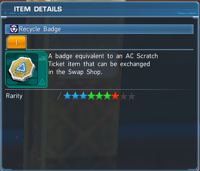Swap Shop
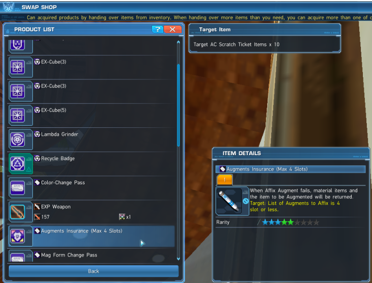Materials Required to make this build:
(At least 4x) Mother Factor Units at 4 slots. Drops from Phantasm Matriach Trigger/UQ (Trigger obtainable from Rising Weapon 3 Badge Swap Shop) or buy from playershop.
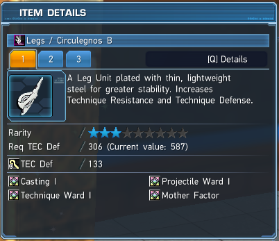(At least 4x) Yamato Factor Units at 4 slots. Drops from Iron Assault Trigger/UQ (Trigger obtainable from Rising Weapon 3 Badge Swap Shop) or buy from playershop.
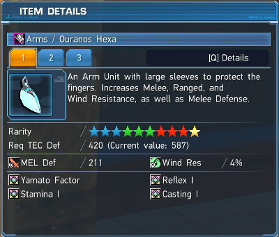(At least 4x) Deus Factor Units at 4 slots. Drops from Maker of New Epochs Trigger/UQ (Trigger obtainable from Rising Weapon 3 Badge Swap Shop) or buy from playershop.
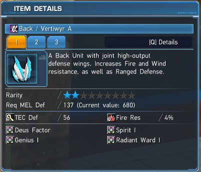(At least 3x) Vol soul (Bar Soul, Ringa Soul, or any Field Boss Soul works) Unit at 4 slots. Drops from Vol Dragon, this guy shows up commonly in Volcanic Caves explorations and advanced quests or buy from player shop
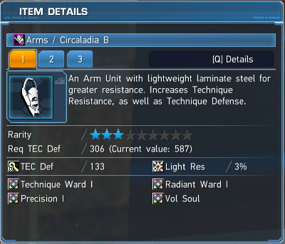(At least 7x) Eastern Soul Unit at 4 slots. Drops with Doom Break in Tokyo or Los Vegas Explorations (drops from the boss "Laplace") or buy from player shop.
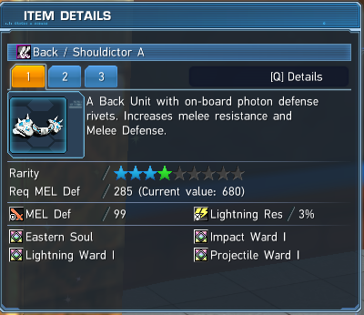(At least 1x) Escarde Soul Unit at 4 slots. Drops with Doom Break in Tokyo or Los Vegas Explorations (drops from the boss "Laplace") or buy from player shop.
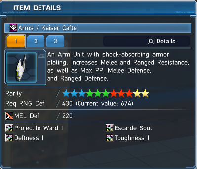(2x) Persona Reverie and Historia Soul Unit at 4 slots. Drops from Malevolent Void Triggers/Urgent Quest or buy from player shop.
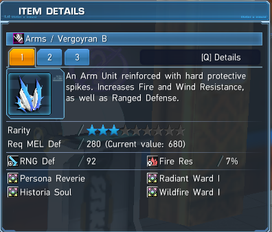(2x) Persona Reverie Unit at 4 slots. Drops from Malevolent Void Triggers/Urgent Quest, Omega Masquerade Ultimate Quest, or buy from player shop.
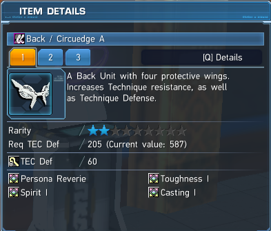(1x) Augment (Melee & PP/3) also known as Graceful Might. From AC scratches and player shop.
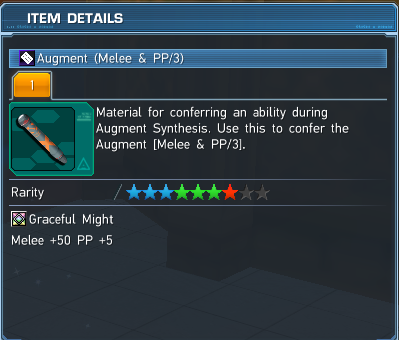(At least 4x) Augmentation Aid +30%. From the Ex-Cube swap shop, Weekly Arks Missions, Daily Log-In rewards, and Episode 5 Story Missions.

(At least 1x) Augmentation Aid +40%. From the Ex-Cube swap shop, Daily Log-In rewards, and Episode 5 Story Missions.

(At least 1x) Augment Insurance (Max 4 Slots). From Swap shop by trading in 10 Recycle Badges.
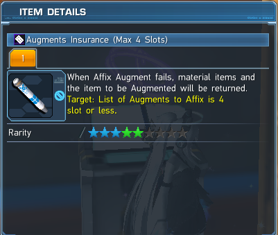Step 1: Downslotting your base to 4 slots
In-depth Upslotting/Downslotting page here.
1. If your unit is at 4 slots already, go to Step 3. If your unit is 3 slots or fewer, go to Step 2. If your base unit is 5 slots or more, go grab a junk unit with the same amount or more slots as your base unit.
2. Go to Dudu/Monica, and select "Affix Augment."
3. First select your base unit, and then the junk unit.
4. Click "Confirm" and if there is a pop up saying "You have a support item that certain Augments can be affixed to. Choose the one you wish to use," choose "Don't Use."
5. Select the augments with the lowest success rates and click "Start Affix Augment."
6. Now click "Yes," and unless you are very lucky at the wrong times, you can move on to Step 2. If your unit is still 5 slots or more, repeat 1-5
Step 2: Upslotting your base to 4 slots
1. If your unit is at 4 slots already, go to Step 3. If your base unit is 3 slots or less, get 2 junk units with the same amount of slots or more as your unit.
2. Go to Dudu/Monica, and select "Affix Augment."
3. Now select your base unit first, and then select the 2 junk units.
4. Click "Confirm" and if there is a pop up saying "You have a support item that certain Augments can be affixed to. Choose the one you wish to use," choose "Don't Use."
5. Select the same amount of augments with an extra augment that has a HIGH chance of success to upslot your unit, and click "Start Affix Augment."
6. Now under "Success Boosters" click the "Don't Use" dropdown and select the Success Booster (Augmentation Aid) you would like to use (I suggest using an Augmentation Aid +30%), and click "Yes" after you have done so.
7. Now pray that everything succeeds if they are not all at 100% for success.
8. Repeat 1-7 until your base unit is at 4 slots.
Step 3: Affixing Eastern Soul onto your base unit
1. Take your base unit at 4 slots and (3x) Eastern Soul 4 slot units to Dudu/Monica
2. Select "Affix Augment," first select your base unit, then the (3x) Eastern Soul 4 slot unit
3. Click "Confirm" and if there is a pop up saying "You have a support item that certain Augments can be affixed to. Choose the one you wish to use." Choose "Don't Use."
4. Select Eastern Soul, and 3 other augments that have at least 70% chance for success and click "Start Affix Augment."
5. Now under "Success Boosters" click the "Don't Use" dropdown and select the Augmentation Aid +30%, and click "Yes" after you have done so.
Step 4: Affixing Persona Reverie with Eastern Soul onto your base unit
1. Take your base unit with Eastern Soul at 4 slots, (1x) Persona Reverie with Historia Soul 4 slot unit and (2x) Persona Reverie Units 4 slot units to Dudu/Monica
2. Select "Affix Augment," first select your base unit, then the (1x) Persona Reverie with Historia Soul 4 slot unit and (2x) Persona Reverie Units 4 slot units.
3. Click "Confirm" and if there is a pop up saying "You have a support item that certain Augments can be affixed to. Choose the one you wish to use." Choose "Don't Use."
4. Select Persona Reverie, Eastern Soul, and 2 other augments that have at least 70% chance for success and click "Start Affix Augment."
5. Now under "Success Boosters" click the "Don't Use" dropdown and select the Augmentation Aid +30%, and click "Yes" after you have done so.
6. Lock your base unit to prevent accidently using it as fodder.
From here on, you might need to acquire more fodder for the augments below, but do not worry for the final product as when making the final product, if it fails you will not need to remake everything again because of Augment Insurance (Max 4 slots).
Step 5: Making a fodder unit with Aether Soul and Factor Catalyst
1. Take (1x) unit with Eastern Soul at 4 slots, (1x) Escarde Soul 4 slot unit, (1x) Deus Factor 4 slot unit, (1x) Yamato Factor 4 slot unit, and (1x) Mother Factor 4 slot unit to Dudu/Monica
2. Select "Affix Augment," first select the (1x) Eastern Soul 4 slot unit, then the (1x) Escarde Soul 4 slot units, (1x) Deus Factor 4 slot unit, (1x) Yamato Factor 4 slot unit, and (1x) Mother Factor 4 slot unit.
3. Click "Confirm" and if there is a pop up saying "You have a support item that certain Augments can be affixed to. Choose the one you wish to use," choose "Don't Use."
4. Select Aether Soul, Factor Catalyst, and 2 other augments that have at least 70% chance for success and click "Start Affix Augment."
5. Now under "Success Boosters" click the "Don't Use" dropdown and select the Augmentation Aid you would like to use (If you have over 1000+ Ex-Cubes, use Augmentation Aid +40%, if not use Augmentation Aid +30%), and click "Yes" after you have done so.
6. If any augments fail, acquire more of the fodder required, and repeat 1-5.
7. If everything succeeds, lock the unit to prevent accidently using it as fodder.
Here is an image of a 4s unit with Aether Soul and Factor Catalyst.
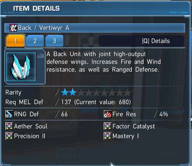Step 6: Making a fodder unit with Factor Catalyst and Vol Soul
1. Take (1x) Deus Factor 4 slot unit, (1x) Yamato Factor 4 slot unit, (1x) Mother Factor 4 slot unit, and (3x) Vol Soul 4 slot units to Dudu/Monica
2. Select "Affix Augment," first select the (1x) Deus Factor 4 slot unit, then the (1x) Yamato Factor 4 slot unit, (1x) Mother Factor 4 slot unit, and (3x) Vol Soul 4 slot units.
3. Click "Confirm" and if there is a pop up saying "You have a support item that certain Augments can be affixed to. Choose the one you wish to use," choose "Don't Use."
4. Select Factor Catalyst, Vol Soul and 2 other augments that have at least 70% chance for success and click "Start Affix Augment."
5. Now under "Success Boosters" click the "Don't Use" dropdown and select the Augmentation Aid you would like to use (If you have over 1000+ Ex-Cubes, use Augmentation Aid +40%, if not use Augmentation Aid +30%), and click "Yes" after you have done so.
6. If any augments fail, acquire more of the fodder required, and repeat 1-5.
7. If everything succeeds, lock the unit to prevent accidently using it as fodder.
Here is an image of a 4 slot unit Factor Catalyst and Vol Soul.
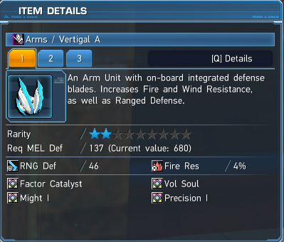Step 7: Making a fodder unit with Factor Catalyst
1. Take (1x) Deus Factor 4 slot unit, (1x) Yamato Factor 4 slot unit, and (1x) Mother Factor 4 slot unit to Dudu/Monica
2. Select "Affix Augment," first select the (1x) Deus Factor 4 slot unit, then the (1x) Yamato Factor 4 slot unit, and (1x) Mother Factor 4 slot unit.
3. Click "Confirm" and if there is a pop up saying "You have a support item that certain Augments can be affixed to. Choose the one you wish to use," choose "Don't Use."
4. Select Factor Catalyst, and 3 other augments that have at least 70% chance for success and click "Start Affix Augment."
5. Now under "Success Boosters" click the "Don't Use" dropdown and select the Augmentation Aid you would like to use (If you have over 1000+ Ex-Cubes, use Augmentation Aid +40%, if not use Augmentation Aid +30%), and click "Yes" after you have done so.
6. If any augments fail, acquire more of the fodder required, and repeat 1-5.
7. If everything succeeds, lock the unit to prevent accidently using it as fodder.
Here is an image of a 4 slot unit with Factor Catalyst.
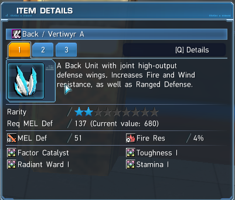Step 8: Making another fodder unit with Factor Catalyst
1. Take (1x) Deus Factor 4 slot unit, (1x) Yamato Factor 4 slot unit, and (1x) Mother Factor 4 slot unit to Dudu/Monica
2. Select "Affix Augment," first select the (1x) Deus Factor 4 slot unit, then the (1x) Yamato Factor 4 slot unit, and (1x) Mother Factor 4 slot unit.
3. Click "Confirm" and if there is a pop up saying "You have a support item that certain Augments can be affixed to. Choose the one you wish to use," choose "Don't Use."
4. Select Factor Catalyst, and 3 other augments that have at least 70% chance for success and click "Start Affix Augment."
5. Now under "Success Boosters" click the "Don't Use" dropdown and select the Augmentation Aid you would like to use (If you have over 1000+ Ex-Cubes, use Augmentation Aid +40%, if not use Augmentation Aid +30%), and click "Yes" after you have done so.
6. If any augments fail, acquire more of the fodder required, and repeat 1-5.
7. If everything succeeds, lock the unit to prevent accidently using it as fodder.
Here is the same image of a 4 slot unit with Factor Catalyst.
Step 9: Making the final product
1. Unlock everything.
2. Take your base unit at 4 slots with Persona Reverie and Eastern Soul and the following to Dudu/Monica. I have provided a handy checklist.
-(1x) Aether Soul with Factor Catalyst 4 slot unit
-(1x) Factor Catalyst with Vol Soul 4 slot unit
-(2x) Factor Catalyst 4 slot unit
-(1x) Persona Reverie with Historia Soul 4 slot unit
-(1x) Augment (Melee & PP/3)
-(1x) Augment Insurance (Max 4 Slots)
-(1x) Augmentation Aid +40%
3. Select "Affix Augment," first select your base unit with Persona Reverie and Eastern Soul, then select the Aether Soul with Factor Catalyst 4 slot unit, Factor Catalyst with Vol Soul 4 slot unit, Factor Catalyst 4 slot unit, other Factor Catalyst 4 slot, and Persona Reverie with Historia Soul 4 slot unit.
4. Click "Confirm" and there should be a pop up saying "You have a support item that certain Augments can be affixed to. Choose the one you wish to use," choose "Augment (Melee & PP/3)."
5. Select Aether Factor, Allies Di Soul, Persona Reverie and Graceful Might (This might be already selected for you) then click "Start Affix Augment."
6. Now under "Success Boosters" click the "Don't Use" dropdown and select the Augmentation Aid +40%. Under "Item Preservers" click the "Don't Use" dropdown and select Augment Insurance (Max 4 Slots) and click "Yes" after you have done so.
7. If any augments fail, do not worry! You get everything back except for the Augmentation Aid +40% and Augment Insurance (Max 4 Slots). So just get another Augmentation Aid Aid+40% and Augment Insurance (Max 4 Slots), and repeat 2-6
6. Enjoy your newly affixed 4 slot unit! BEST OF LUCK ARKS OPERATIVE!
Things to Think About
-Could you have used Elder Reverie instead of Persona Reverie for more defence at the cost of 20 less Ranged Power, 20 less Tech Power, and 2 less PP?
-Maybe switch out Augment (Melee & PP/3) for Augment (Grand Might)?
-Maybe use Acto Di Soul instead of Allies Di Soul for 10 more Melee attack at the cost of 10 less Range attack, 10 less Tech attack, and 35 less HP?
-Maybe make the final product via upslot to save meseta on fodders?
-If you cannot afford it, maybe farm for the fodder?